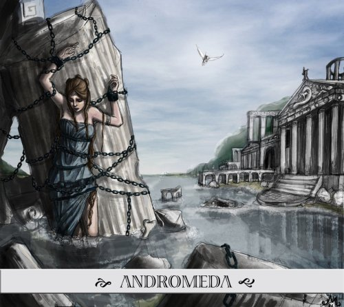
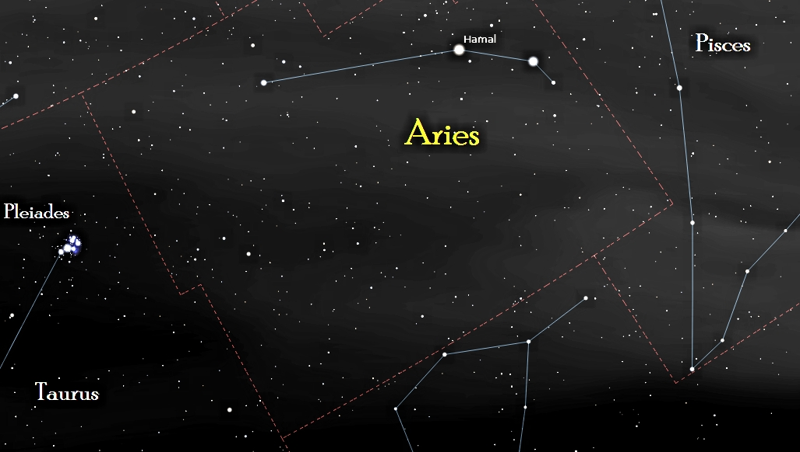
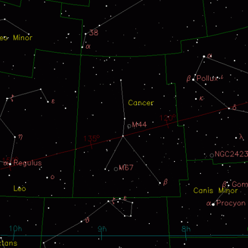

Andromeda

Această constelație mare din emisfera nordică aparține familiei Perseus, Cassiopeia și Cepheus. Numele stelei primare a Andromedei este Sirrah, care în limba arabă înseamnă ”ombilicul cailor”. Această asociere indică relația cu constelația Pegasus, de la granița Andromedei.
În mitologie, Andromeda era fiica Casiopeiei și a lui Cepheu. Din nefericire mama sa era atât de vanitoasă, încât se credea mult mai frumoasă decât fiicele lui Nereus, o zeitate a mării. Aceasta l-a infuriat pe Poseidon, care pentru a o pedepsi pe mamă, a legat-o pe Andromeda în lanțuri de o stâncă pe coasta mării, ca sacrificiu pentru un monstru marin, Cetus (o altă constelație sudică). Totuși, Andromeda a reușit să scape de o asemenea soartă, fiind salvată de către Perseus. Perseus, pentru a o salva, le-a cerut părinților să le-o dea pe Andromeda în căsătorie, ceea ce aceștia au acceptat bucuroși. Ca o eternă amintire, Cassiopeia a rămas pentru totdeaua înlănțuită de tronul său regal, și sortită să se rotească mereu pe cerul înstelat.

Berbecul

Aries este una dintre constelațiile zodiacului, poziționată pe planul ecliptic, având constelații vecine Pisces la vest și Taurus, la est.
Doar stelele Alpha și Beta – Hamal și Sheratan sunt ușor de recunoscut. Acestea reprezintă capul berbecului. Steaua Teegarden este o descoperire recentă în constelația Aries, una dintre cele mai apropiate stele de Soarele nostru, la o distanță de numai 12 ani lumină. Pare să fie o pitică roșie, din clasa stelelor cu temperaturi joase și luminozitate slabă. Aceasta este probabil explicația descoperirii sale târzii, deoarece are o magnitudine aparentă de numai 15,4.
Racul

Constelaţia Cancer este mică, vagă şi nu seamănă defel cu un crab sau cu un homar (sau rac de mare) – dar este una dintre cele 12 constelaţii ale zodiacului. Poziţionată pe planul ecliptic, Cancer se află dispusă între Gemini către vest şi Leo către est. Lynx către Nord şi Canis Minor și Hydra către sud. Constă din 5 stele principale și 76 de stele desemnate Bayer/Flamsteed.
În mitologie Cancer era un personaj din episodul celor 12 munci ale lui Hercule. În timp ce Hercules era ocupat luptându-se cu un monstru cu multe capete, Hydra, zeița Hera, care nu-l plăcea pe Hercule, a trimis Crabul pentru a-i distrage atenția. Cancer s-a prins cu cleștii de piciorul eroului dar nu a reușit să-l încetinească pe erou în lupta cu Hera și Hercules l-a zdrobit pe crab cu piciorul. Hera, recunoscătoare pentru efortul mititel dar eroic al micului crustaceu, i-a dat acestuia un loc pe cer. Crabul nu a fost învingător, așa că zeii nu i-au dat racului stele strălucitoare.